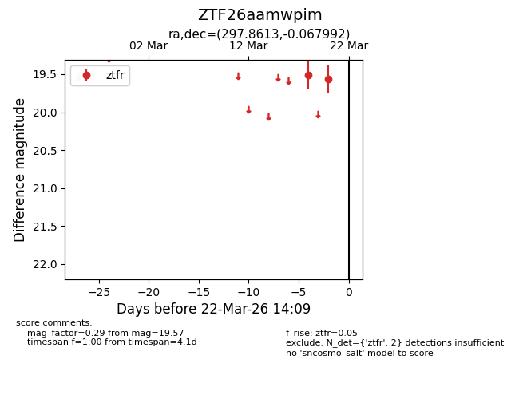
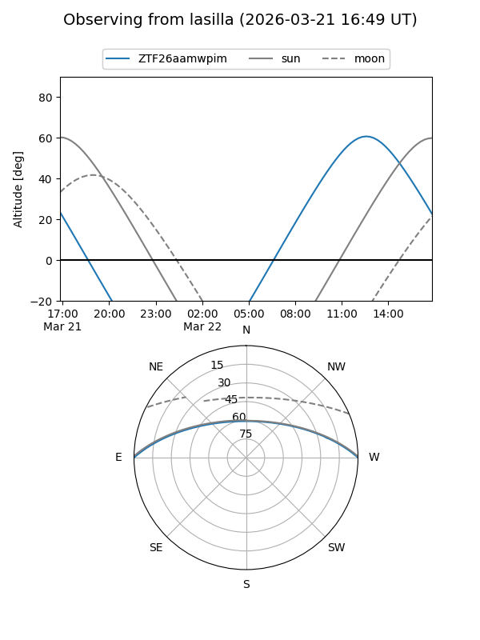
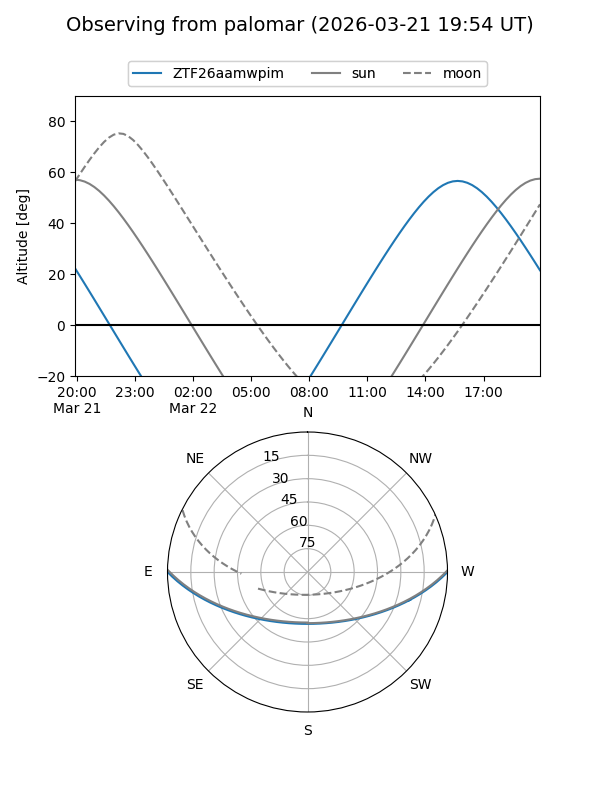

ZTF26aamwpim
Target ZTF26aamwpim at 2026-03-22 14:11
Aliases and brokers:
FINK: link
Lasair: link
ALeRCE: link
alt names
ZTF26aamwpim (ztf,fink_ztf)
Coordinates:
equatorial (ra, dec) = 297.8613,-0.06799
equatorial (HMS+DMS) = 19:51:26.71,-00:04:04.77
galactic (l, b) = (39.8370,-13.35088)
Flags:
Photometry:
last ztfr=19.57
2 ztfr detections
Lightcurve

Visibility


Additional plots